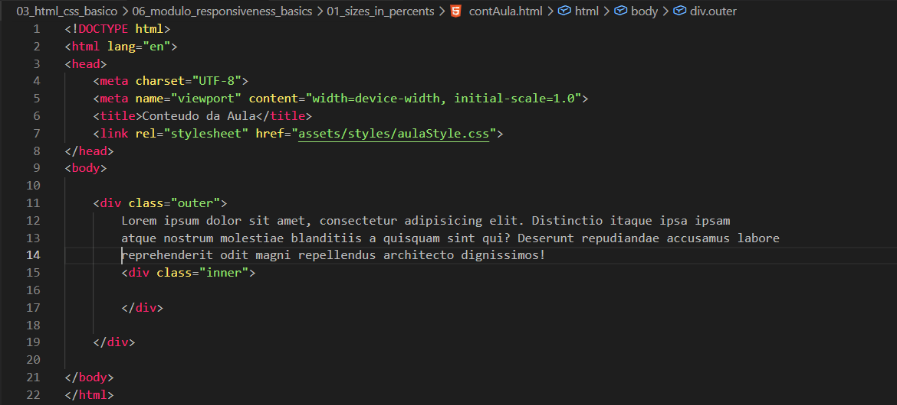
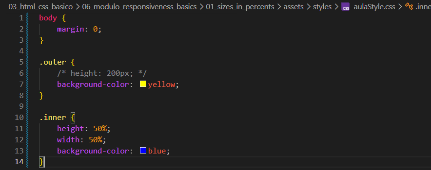

Sizes in Percents
Intro
Aqui iremos ver sobre os tamanhos relativos dos elementos.
Aqui iremos ver sobre os tamanhos relativos dos elementos.
Para entendermos melhor, iremos adicionar duas "caixas" à nossa página.
Uma delas será a caixa externa e a outra a caixa interna.
Elas terão as seguintes modificações:
Externa: terá height: 200px; e background-color: yellow;.
Interna: terá height: 100px; e background-color: blue;.
Após isso, iremos adicionar mais modificações.
Se comentarmos a altura (height) do elemento externo (outer), podemos observar que o elemento interno se ajusta ao conteúdo e pode ocupar o espaço disponível.
A questão é que, quando temos uma caixa dentro da outra e utilizamos porcentagem (%), isso só funciona corretamente se o elemento pai tiver uma altura definida.
Caso removamos a altura do elemento externo e adicionemos conteúdo (como um lorem), mesmo com a cor blue na caixa interna, ela pode não aparecer como esperado.


Também veremos casos onde o conteúdo pode ultrapassar o tamanho do elemento. Isso acontece quando um elemento possui um valor fixo.